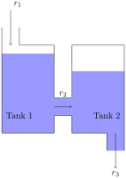

Interdependent quantities can often be represented mathematically by a system of equations. If we have information about the rates of change of these quantities, then we may be able to develop a model using a system of differential equations.
Definition4.1.1.
A first order system of ODEs is a system of differential equations involving some collection of functions and their first derivatives.
We are still only dealing with ordinary differential equations which means that we will only ever have one independent variable. However, when dealing with systems of ODEs we will be working with several dependent variables.
The systems of ODEs that we will consider will typically look like the following:
where \(a_{ij}\) are constants and \(y_{i}\) are functions of \(t\text{.}\)
Example4.1.2.Modeling interconnected tanks.
Two brine tanks are set up as in Figure 4.1.3. Fresh water flows into the tank at a rate of \(r_{1}\text{,}\) well-mixed solution flows from Tank 1 to Tank 2 at a rate of \(r_{2}\) and well-mixed solution flows out of Tank 2 at a rate of \(r_{3}\text{.}\) Suppose that \(r_{1}, r_{2}\) and \(r_{3}\) are 5 gal⁄min, the volume of solution in Tank 1 is 10 gal and the volume of solution in Tank 2 is 7 gal. Suppose Tank 1 has 5 lb of salt at time \(t=0\) and Tank 2 has 2 lb of salt at time \(t=0\text{.}\) Set up a first-order system that describes the amount of salt in each tank at time \(t\text{.}\)
Solution.
Let \(x_{1}(t)\) denote the amount of salt in Tank 1 at time \(t\text{,}\) and \(x_{2}(t)\) denote the amount of salt in Tank 2 at time \(t\text{.}\) Using the mixture ODE \(\dv{x}{t} = r_{i}c_{i}-r_{o}\frac{x}{V(t)}\) developed in Section 1.4, we can write
with initial conditions \(x_{1}(0) = 5\) and \(x_{2}(0) = 2\text{.}\)

A diagram representing a system of two interconnected tanks. Fresh water is flowing into the first tank. The well-mixed solution then flows from the first tank into the second tank. The well-mixed solution from the second tank then flows out of the system.
Figure4.1.3.The two interconnected tanks from Example 4.1.2
To actually solve systems of ODEs, we’ll use matrices to rewrite these systems as matrix ODEs.
Definition4.1.4.Matrices and vectors.
An \(m\times n\) matrix is an array of \(m\) rows and \(n\) columns. \(m\times1\) matrices are called (column) vectors. Matrices are typically denoted with capital italic letters (such as \(A\text{,}\)\(M\)) and vectors are often denoted with lower case bold letters (such as \(\vec{v},\vec{x})\text{.}\) A zero matrix will be denoted using \(\vec{0}\text{.}\)
The \(2\times 2\) identity matrix is the matrix \(I = \begin{bmatrix}1\amp0\\0\amp1\end{bmatrix}\text{.}\) A scalar is just a constant. To multiply a scalar \(c\) with a matrix \(A\text{,}\) just multiply every element of \(A\) with \(c\text{.}\)
If \(A\) is any \(2\times2\) matrix and \(\vec{v}\) and \(2\times1\) vector, then \(AI=IA=A\) and \(I\vec{v} = \vec{v}\text{.}\)
Example4.1.6.Computing a matrix-vector product.
Let \(A = \begin{bmatrix} 1\amp0\\-3\amp2 \end{bmatrix},\vec{v}_{1} = \begin{bmatrix}1\\1\end{bmatrix}\) and \(\vec{v}_{2} = \begin{bmatrix}0\\5\end{bmatrix}\text{.}\) Compute \(A\vec{v}_{1}\) and \(A\vec{v}_{2}\text{.}\)
In Example 4.1.6, notice that \(A\vec{v}_{2} = 2\vec{v}_{2}\text{.}\) This means that \(A\) didn’t really do all that much to \(\vec{v}_{2}\) except to stretch it by a factor of \(2\text{.}\) Vectors with this property will turn out to be the key to solving our systems of ODEs.
Any linear system can be written as an equivalent first-order system or matrix ODE.
Example4.1.7.Interconnected spring-mass system.
Consider a spring mass system with two masses arranged as follows:
A diagram representing two masses connected horizontally by springs. The first mass is connected to a wall by a spring. The first mass is also connected to the second mass by another spring with a possibly different spring constant.
Determine a first-order system that the displacements \(x_1\) and \(x_2\) must satisfy.
Solution.
From Section 2.3 we know how to model a spring-mass system with a single mass using Hooke’s law and Newton’s Second Law. We will apply this same analysis to the displacements \(x_1\) and \(x_2\) individually.
To begin, we will analyze the forces acting on the first mass. Here there are two forces to consider: the force caused by the motion of \(m_1\) and the force caused by the motion of \(m_2\text{.}\) Likewise, the second mass is also influenced by two forces. We arrange these in the following table:
mass
forces
\(m_1\)
\(-k_1x_1, -k_2x_1, k_2x_2\)
\(m_2\)
\(k_2x_1, -k_2x_2\)
Now we can apply Newton’s Second Law to get the second-order system
At this point we can introduce new dependent variables \(u_1, u_2, u_3\) and \(u_4\) to get an equivalent first-order system.
Although this type of system is new, the solutions behave as expected. In particular, both \(x_1\) and \(x_2\) display periodic motion as can be seen by the Sage example below.
Definition4.1.8.Eigenvectors and eigenvalues.
Let \(A\) be a matrix. A nonzero vector \(\vec{v}\) is an eigenvector of \(A\) if \(A\vec{v} = \lambda\vec{v}\) for some scalar \(\lambda\text{.}\) We call \(\lambda\) an eigenvalue of \(A\) corresponding to the eigenvector \(\vec{v}\text{.}\)
Example4.1.9.Determining if a vector is an eigenvector.
Determine if \(\vec{v} = \begin{bmatrix}-2\\1\end{bmatrix}\) is an eigenvector of \(A = \begin{bmatrix}1\amp4\\1\amp1\end{bmatrix}\text{.}\)
So \(\vec{v}\) is an eigenvector of \(A\) with corresponding eigenvalue \(\lambda=-1\text{.}\)
Since we will be looking at systems of ODEs which involve functions, we will need to define vector-valued functions. These objects will represent the solutions of our systems.
Definition4.1.10.Vector-valued functions.
A vector-valued function is a vector whose elements are functions. If each of the functions in a vector \(\vec{x}\) depends on the variable \(t\text{,}\) we often write \(\vec{x}(t)\) to denote this. The derivative of a vector-valued function \(\vec{x}(t) = \begin{bmatrix}x_{1}(t)\\x_{2}(t)\end{bmatrix}\) is the new vector-valued function \(\vec{x}^\prime(t)=\begin{bmatrix}x^\prime_{1}(t)\\x^\prime_{2}(t)\end{bmatrix}\text{.}\)
We now have all of the tools we need to rewrite a first-order system as a matrix ODE. Let
We need to find a matrix \(A\) and vector \(\vec{x}\) to let us rewrite this system. The matrix \(A\) is formed from the coefficients of \(x_{1},x_{2}\) on the right hand side of the system:
\begin{equation*}
A = \begin{bmatrix}-\frac{1}{2}\amp 0\\\frac{1}{2}\amp -\frac{5}{7}\end{bmatrix}.
\end{equation*}
The vector \(\vec{x}\) is just made up of the dependent variables \(x_{1},x_{2}\text{:}\)
We’ll check that \(\vec{x}_{0}\) is a solution of the matrix ODE just as we check solutions for normal ODEs: plug the potential solution into the ODE and check both sides. If we do so, we get
Since these expressions match, this means that \(e^{-t}\vec{x}_{0}\) is a solution of the ODE.
One thing to note about the previous example is that \(\begin{bmatrix}-2\\1\end{bmatrix}\) was an eigenvector of \(\begin{bmatrix}1\amp 4\\1\amp 1\end{bmatrix}\) with corresponding eigenvalue \(\lambda=-1\text{.}\) See Example 4.1.9. This suggests that solutions of the matrix ODE \(\vec{x}^\prime = A\vec{x}\) take the form \(\vec{x} = e^{\lambda t}\vec{x}_{0}\text{,}\) where \(\lambda\) is an eigenvalue of \(A\) with corresponding eigenvector \(\vec{x}_{0}\text{.}\) One last concept we need is that of linear independence of vectors.
Definition4.1.13.Linear independence of vectors.
Let \(\vec{x}_{1},\dots,\vec{x}_{n}\) denote a collection of vectors. We say that the vectors are linearly independent if the equality